For the government's AI natives
Intent is the new oil.
Capping tokens is the leak.
Brad Baker·25 minutes·one vote

The $1 era is over: on October 1, government AI went on a meter.
- 1$1 deals, Aug 2025
- 23.5M employees onboarded
- 3Sept 30: the $1 ends
- 4Oct 1: pay per token, half off, to 2028
Claude's $1 extension ends. Gemini renews at a per-user price it hasn't named. FY27 renewals are being written now.
GSA OneGov; FedScoop, 10 & 17 Sep 2026 (OpenAI successor deal; Anthropic extension); Gemini offer terms as reported.
You're the one in a thousand, which is why the people who sign can't see what you see.

- 1 in 1,000people actually building their own agents on a harness: you
- > 998you use more tokens than everyone else on the floor combined
- 3 monthsuntil the people next to you are doing it too, on the same meter
1-in-1,000: Brad's field observation of people building their own agents. Spread illustrative.
Your ask upstairs is owned capacity for the people who use the most, not more seats.
The meter
Demand grows faster than prices fall, so the bill spikes in the quarters you're most productive.
The leak
If they cap you, the work moves to tools the contract doesn't cover.
The ladder
Three levels of capacity you own, and one metered gate to the frontier.
Your kit
Three sentences, two numbers and one ask. You'll leave with all of them.
Token use grew a millionfold while the price fell sixteenfold, so the bill went up.
- ×1,000,000top customer's tokens a month, 2019 → 2026 (100K → 100B)
- ÷16frontier list price per million tokens ($60 → $3.85)
- ×64,000the monthly bill
Altman on stage, June 2026 (volume); 2020 API launch pricing and Artificial Analysis (price); log-interpolated. $1.3M month: Peter Steinberger's published bill (Tom's Hardware).
One agency went from zero to 19,000 users in 45 days, then had to ration them.
- 1Turned it on
- 219,000 users in 45 days
- 3Per-token bill
- 4Ration the users
from launch to rationing at one large federal service: small jobs by hundreds of thousands of people “get expensive real, real fast.”
AI Weekly, Aug 2026: a $49M five-year wrapped-LLM contract with an LLM-agnostic router; the CIO imposed user-based rationing.
The most AI-heavy employers spend half a salary on tokens, and your seat cost a dollar.
- $1per user: the OneGov price that is ending
- $137the median US business, per employee per year
- $250KJensen Huang's bar for a $500K engineer: half the salary
Ramp AI Index, June 2026 (70,000+ US businesses, annualized); Huang on the record (Tom's Hardware).
Models could do 94% of the tasks in computing jobs, but at work they do about a third.

Massenkoff & McCrory, “Labor market impacts of AI,” Anthropic, 5 March 2026.
When they cap you, the work moves to personal accounts, and the contract doesn't cover those.
- 66%of office workers used AI tools they believed weren't allowed
- 88%of them shared work information through those tools
- 5 yearsretention on consumer plans when the training setting is on
PagerDuty, June 2026 (n = 1,250 office professionals, companies ≥ $500M); Anthropic consumer and commercial terms (Aug 2025), with equivalent terms at every major lab.
The labs ship new products where their usage is densest: images, code, security, finance and legal.
Public product launches, in order; Anthropic Economic Index (30+ categories); Artificial Analysis Intelligence Index v4.3.2, Oct 2026 (39 vs 58). Heights illustrative; the causal reading is Brad's.
Capping tokens starts an eight-step loop, and owned capacity breaks it at step three.
PagerDuty, June 2026; AI Weekly, Aug 2026; Anthropic consumer terms, Aug 2025; Anthropic Economic Index.
The best US open-weight model is three points behind Opus 4.8, at a fifth of the price.
Meta's closed Muse Wonder Full scores 56, so watch what Meta releases openly next.
Caveat: most benchmarks are gamed. Labs tune for the tests and publish their best results, so run your own evaluations on your own work.
US-built models only. Artificial Analysis Intelligence Index v4.3.2, read 18 Oct 2026 (Muse Wonder Full: 12 Oct); blended $/M at 7:2:1; first-party speed.
Own three levels and rent one gate: routine work stays inside, and hard problems go out.
- 39US open on the rungs you own: $0.78 per million tokens, 131 a second, no cap
- 58the frontier, through one gate: $2.94 per million, 98 a second, metered
- 1 gatesensitive context removed on the way out
Artificial Analysis Intelligence Index v4.3.2, Oct 2026. Token mix illustrative.
Above 5.3 hours a day, owning the hardware costs less than renting it, and you work about twelve.

Lenovo 2026 TCO (vendor study): 5-year life, zero residual, 12% maintenance, $0.12/kWh; ~5.2-month break-even. Frontier and wrapped rates are Brad's reads.
When you write the RFP, four parts are drafted inside and two go out with the budget removed.
Illustrative workflow from the manifesto. Source selection plans and technical evaluation plans are source selection information under FAR 2.101.
Your job upstairs is to give each office one sentence it can agree to.
The manifesto's three drivers (pricing, security, operations) translated for each office.
Ask for it in stages: your machine now, the team's box next and the core once it's proven.
Now
An emergency refresh for the heaviest users: secured machines with no cap.
Next
A shared workgroup box that everyone else can use.
Once proven
The core, paid for by the growth you create.
Always
The frontier through one metered gate, for the hard problems.
AI-capable PCs pass half of shipments in 2026 (Counterpoint). Power takes the longest to arrange, so plan it now.
Your advantage is your data, your risk is losing people, and your deadline is October 31.
| The fact | What you ask for | |
|---|---|---|
| Data | Every need-to-know enclave is effectively its own organization. The large cloud providers handle IL6 multi-tenancy in their own buildings, at their prices, on their meter. | Temporary GPU zones inside your own boundary, drawn from the core, so the data never has to leave. |
| People | Federal pay is 27.5% behind the private sector, and many of the strongest builders have already left. | Machines with no cap for the builders who stayed. It's one of the best reasons for them to stay. |
| Deadline | Claude's $1 price ends October 31. The continuing resolution runs to December 11. FY27 renewals are being written now. | Owned capacity, priced against the renewal before the renewal is signed. |
Federal Salary Council (27.54%, Nov 2023); FedScoop, Sep 2026; continuing resolution signed 2 Sep 2026; Azure Government Secret / AWS Secret Region (IL6).
By 2029 every agency will have chosen, by acting or by waiting, so vote for where yours is today.
Own the boundary
0Remove the cap for the heaviest users on capacity you own, build the ladder, and put a gateway on every device.
Keep renting
0Sign the per-token renewal, cap the heavy users, and rely on the contract to cover traffic it never sees.
Renting stays flat for two years and then climbs steeply, while owning keeps paying off.
Keep renting
- The renewal comes priced per user or per token. It won't be a dollar, and the meter has no ceiling.
- The heaviest users hit the caps within a quarter, and personal accounts take the rest.
- Routine mission work ships as someone else's product feature.
- Your best builders leave for the private sector, where pay is 27.5% higher.
Own the boundary
- The full setup is standard: device, workgroup, core and a gated frontier.
- Agents have a registry, kill switches and a person approving key steps.
- Mission data runs on your own hardware and never leaves.
- Small teams move faster than the bureaucracy, and building your own capacity is how the US stays ahead.
On Monday, build the map, log your hours and book three meetings.
Build the map
Every system with an AI feature, who pays for its tokens, which model it uses and what fails when that model is down. One page.
Log your hours
How many hours a day you keep a machine busy, for two weeks. Above 5.3 a day, owning the hardware pays off.
Book three
CFO, CIO and agency head: one sentence each and one ask, capacity for the people who use the most.
Intent is the new oil.
Capping tokens is the leak.
Go get the capacity.
Build your one-page ask
capacity-ask.vercel.app
Brad Baker · An AI Manifesto · V5.2G · government